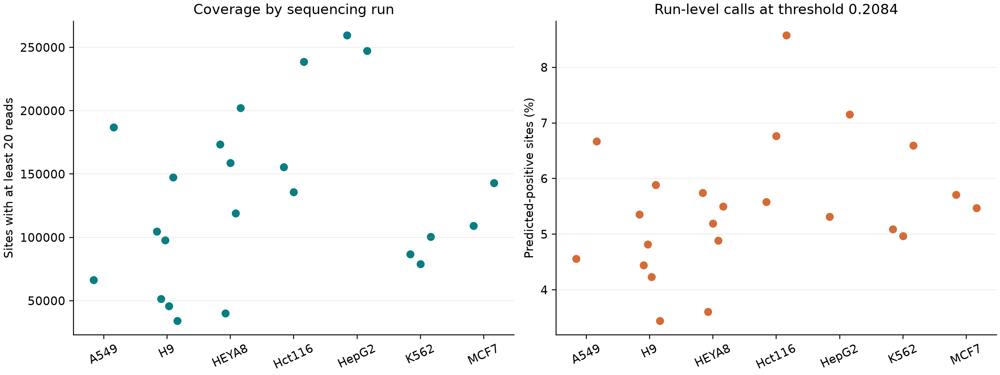
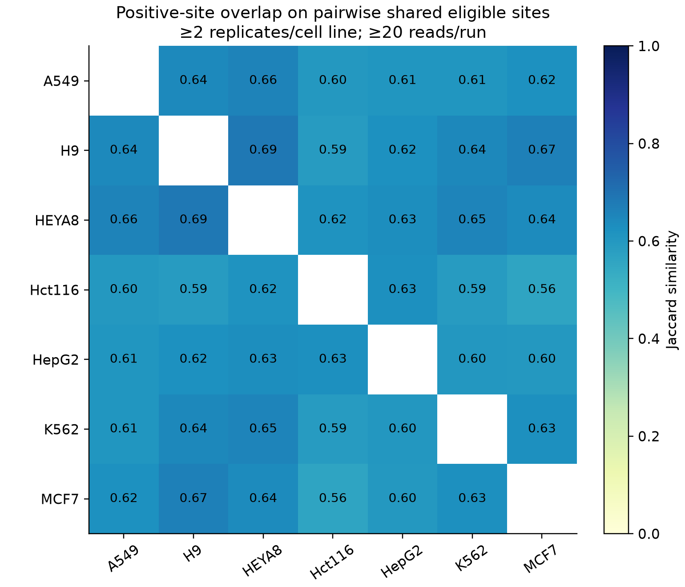

Results-section draft · generated from saved predictions · 2026-10-12T12:57:31.263125+00:00 · Status: complete_processed_inventory
H04 was applied without retraining to 23 of 23 processed direct-RNA sequencing runs across 7 cell lines. The live SG-NEx m6Anet inventory contains 23 runs (33.37 GB); 33 additional direct-RNA runs in the metadata have no JSON input in that directory. Thus this analysis covers the available processed inventory, not every raw SG-NEx experiment.
The model generated 28,670,080 sample–site predictions. All sites were scored, with a primary analysis restricted to observations supported by at least 20 reads per run. Scores were thresholded at 0.208393249. Technical-run scores passing the coverage filter were averaged within each named replicate, followed by an equally weighted mean across replicates. A site needed at least two observed replicates in each cell line for pairwise comparison. Sites were matched on transcript ID, position and 7-mer; missing observations were excluded, never treated as negative.
Ensembl version suffixes were harmonized when at most one explicit version was observed for a stable transcript ID. Original IDs are preserved, and sites still require matching positions and 7-mers. The build harmonized 13,431 distinct input identifiers. The MCF7 naming-mismatch investigation is documented in the Task 2 guide. Known conflicting transcript versions are kept separate; unversioned identifiers still rely on the shared reference convention.
The primary analysis retained 2,983,948 sample–site observations. Run-level predicted-positive fractions ranged from 3.44% to 8.58%. These fractions use different eligible-site sets and therefore cannot establish a ranking of true cellular modification abundance.
| Cell line | Runs | Replicates | Eligible sites/run | Positive sites/run (%) |
|---|---|---|---|---|
| A549 | 2 | 2 | 66,382–187,021 | 4.56–6.67 |
| H9 | 6 | 3 | 34,202–147,467 | 3.44–5.89 |
| HEYA8 | 5 | 3 | 40,086–202,232 | 3.61–5.74 |
| Hct116 | 3 | 2 | 135,870–238,748 | 5.58–8.58 |
| HepG2 | 2 | 2 | 247,181–259,535 | 5.32–7.16 |
| K562 | 3 | 3 | 79,122–100,379 | 4.97–6.60 |
| MCF7 | 2 | 2 | 109,315–143,091 | 5.47–5.71 |

Within-cell-line replicate Spearman correlations on shared covered sites ranged from 0.810 to 0.873 (median 0.851). Because sequence is an input to H04, score agreement may partly reflect shared sequence features and should not be interpreted as independent biological validation.
The largest pairwise positive-site Jaccard similarity was 0.686 for H9 versus HEYA8, based on 89,192 shared eligible sites. The smallest was 0.560 for Hct116 versus MCF7, based on 69,316 shared eligible sites. Pairwise eligible universes differ; these similarities are descriptive.

Candidate sites require all observed qualifying replicates in one cell line to be positive and all in the other to be negative, with at least two per group. The examples below are selected by absolute mean-score difference from the strongest candidate in each pair. They are hypotheses for follow-up, not statistically significant differential-modification calls.
| Comparison | Transcript | Position | Score A | Score B | Difference |
|---|---|---|---|---|---|
| HepG2 / K562 | ENST00000565644 | 3141 | 0.856 | 0.060 | 0.796 |
| Hct116 / K562 | ENST00000565644 | 3141 | 0.834 | 0.060 | 0.773 |
| A549 / K562 | ENST00000451270 | 1212 | 0.788 | 0.029 | 0.759 |
| A549 / HepG2 | ENST00000451270 | 1212 | 0.788 | 0.037 | 0.751 |
| A549 / MCF7 | ENST00000451270 | 1212 | 0.788 | 0.046 | 0.742 |
Coverage sensitivity at the saved score threshold:
| Minimum reads/run | Eligible sample–site observations | Median pairwise Jaccard | Median shared sites/pair |
|---|---|---|---|
| 10 | 5750947 | 0.607 | 131782.000 |
| 20 | 2983948 | 0.622 | 65840.000 |
| 50 | 1101143 | 0.590 | 22844.000 |
Additional score-threshold sensitivity results (0.15, saved threshold, 0.30 and 0.50) are in sample_summary.csv and the interactive explorer. Full pairwise tables retain every compared site; the explorer displays up to 500 candidates and a fixed random sample of 2,000 points per scatter plot, while computing statistics on all shared sites.
These are predictions from an uncalibrated classifier, not modification stoichiometry measurements. Differences may reflect expression, coverage, batch effects, sequence composition or transfer from the model's training distribution. Transcript isoforms are kept separate and may represent the same genomic nucleotide. The model metadata names data0/data1/data2 without source accessions; potential overlap with SG-NEx training-related samples remains unresolved. This analysis is therefore not an independent accuracy evaluation. Experimental independence of named replicate groups should be confirmed before inferential testing.
All raw-input SHA256 values are in download audit files, and the model checksum and prediction thresholds accompany each sample's output. Model SHA256: 17d3c4611f933a765360caad1d3ca2478ebd7a81611251623b3e91e32348654a.
Sources: SG-NEx project and metadata; processed-data access tutorial. Code: this repository's scripts/task2_*.py and src/task2_analysis.py.